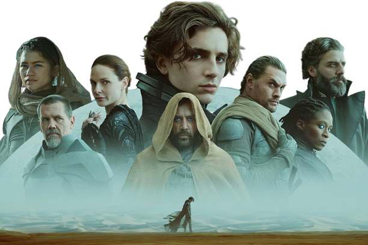

CRÔNICAS DE DUNA
Duna, filme baseado no livro homônimo de 1965 escrito por Frank Herbert, foi lançado nos cinemas no dia 21 de outubro de 2021. A trama do filme para na metade da história contada no livro, sendo que um filme abordando a segunda parte da obra de Herbert já foi confirmado.
Apesar de se manter fiel ao livro, sabemos que transformar uma saga de livros em filme de 2 horas, não é uma tarefa fácil e se tratando das Crônicas de Duna, esse trabalho se torna mais difícil. devido à riqueza de detalhes que só os leitores podem entender.
Aproveitando o sucesso do filme, fizemos esse portal com o intuito de divulgar e disponibilizar os livros da saga, para que todos possam ter a oportunidade de conhecer a fundo uma das sagas de livros mais importantes do mundo..